3.4.2.1. Retención de IVA de Cuentas por Cobrar¶
Realice el procedimiento regular para generar una factura de cuentas por cobrar, explicado en el documento Registro de Documento por Cobrar, elaborado por ERPyA, con productos que incluyan I.V.A para asi aplicar la retención a la factura. Como resultado del ejemplo se tiene lo siguiente:
No del Documento: 53
Fecha de Facturación: 21/07/2021
Fecha de Registro:21/07/2021
Socio del Negocio: E.R.P. Consultores y Asociados, C.A.
Tipo de Documento Destino: Factura de Cuenta por Cobrar Nacional
Total de las Lineas: 40.385.896,80
Gran Total: 46.847.640,29
Impuesto: 6.461.743,49
Estado del Documento: Completo
3.4.2.1.1. Ejecución de la Estimación de Retenciones¶
Para este procedimiento, el registro del socio del negocio de la factura debe tener activo el check “Cliente”, dicho check se encuentra ubicado en la pestaña “Cliente” de la ventana “Socio del Negocio”.
Luego seleccione en el menú de ADempiere, la carpeta “Gestión de Ventas”, luego seleccione la carpeta “Facturas de Ventas”, por último seleccione la ventana “Documento por Cobrar”.
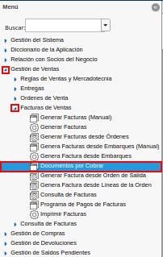
Imagen 1. Menú de ADempiere
Ubique el documento por cobrar al cual se le aplicará la retención de IVA, correspondiente a la factura de la venta realizada. Continuando con el ejemplo anterior, el documento por cobrar a ubicar es el “53”.
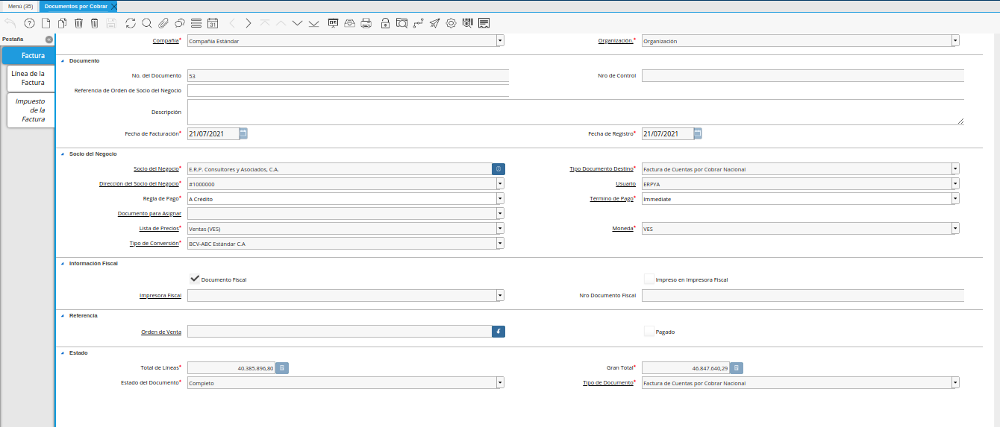
Imagen 2. Factura de Cuentas por Cobrar
Seleccione el icono “Visualiza Detalle”, en la barra de herramientas de ADempiere para desplegar los diferentes registros donde es utilizado el documento, luego seleccione la opción “Retención Generada”.
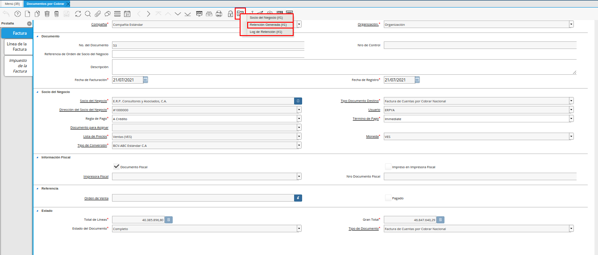
Imagen 3. Icono Visualiza Detalle
Note
La estimación de la retención o precálculo de retención, se puede visualizar cuando el documento por cobrar se encuentre en estado “Completo”.
Podrá visualizar la ventana “Retención Generada” con la estimación de la retención generada de manera automática por ADempiere.
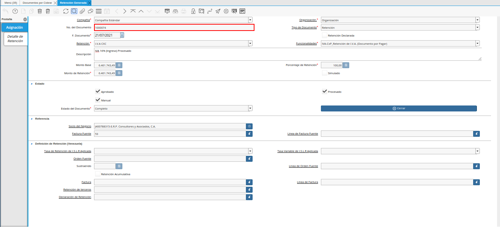
Imagen 4. Estimación de Retención de Cuentas por Cobrar
Podrá visualizar en el campo “F. Documento”, la fecha en la que fue generada la estimación de la retención.
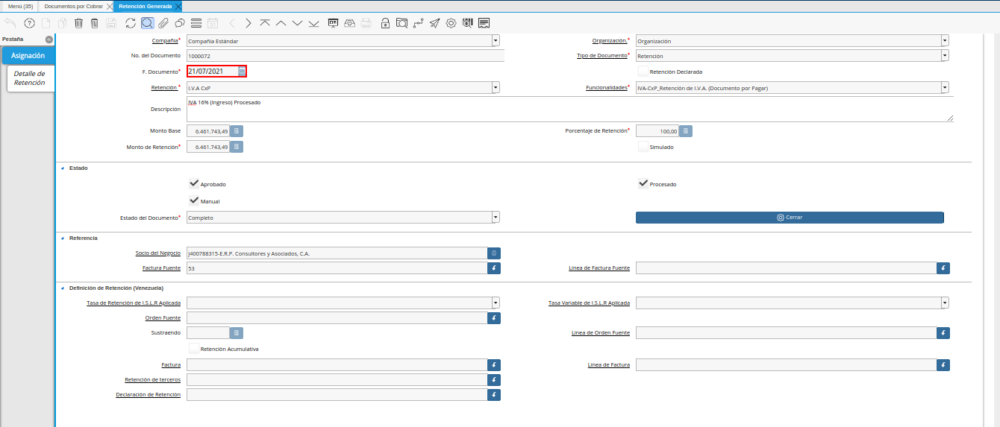
Imagen 5. Campo Fecha de Documento de la Estimación de Retención
Adicional a ello, el tipo de retención al cual le fue aplicada la estimación de retención, se encuentra en el campo “Retención”.
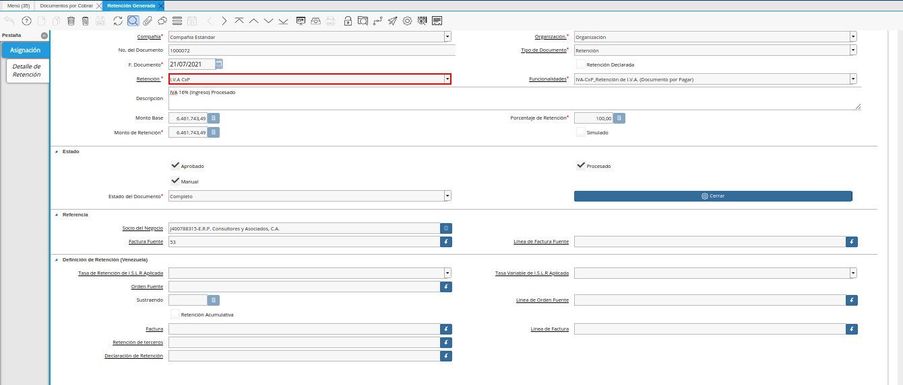
Imagen 6. Campo Retención de la Estimación de Retención
El monto estimado de la retención, se encuentra en el campo “Monto de Retención”.
Imagen 7. Campo Monto de Retención de la Estimación de Retención
Finalmente, la información del socio del negocio y la factura a la cual le fue aplicada la retención, se encuentra en el grupo de campos “Referencia”.
Imagen 8. Grupo de Campos Referencia de la Estimación de Retención
Note
Hasta este punto, solo se ve un precálculo o una estimación de la retención a aplicar a este documento por cobrar.

3.4.2.1.2. Generar Retención¶
Ubique y seleccione en el menú de ADempiere, la carpeta “Manejo de Retenciones”, luego seleccione la ventana de búsqueda inteligente “Generar Retenciones”.
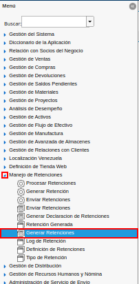
Imagen 9. Menú de ADempiere
Podrá visualizar la ventana “Generar Retenciones”, con diferentes campos que permiten filtrar la búsqueda de los registros para generar las retenciones.
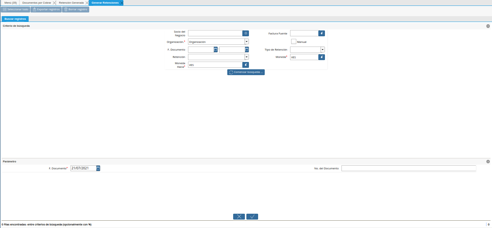
Imagen 10. Ventana de Búsqueda Inteligente Generar Retenciones
Continuando con el ejemplo del documento por cobrar “53”, se tiene que el mismo fue creado con moneda “VES” y el pre-cálculo se generó con moneda “VES”. Se procede a ubicar la misma en la ventana de búsqueda inteligente “Generar Retenciones”, considerando con las siguientes condiciones:
Seleccione en el campo “Socio del Negocio”, el socio del negocio relacionado a la retención que requiere generar.
Imagen 11. Campo Socio del Negocio de la Retención

En el campo “Organización”, la organización relacionada a la retención que requiere generar.
Imagen 12. Campo Organización de la Retención

Seleccione en el campo “F. Documento”, el rango de fecha en la cual fue generado el documento por cobrar relacionado a la retención que requiere generar.
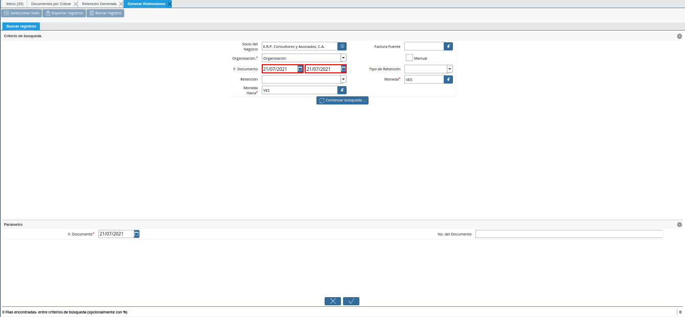
Imagen 13. Campo Fecha del Documento de la Retención
Seleccione en el campo “Retención”, el tipo de retención por el cual requiere filtrar la información.
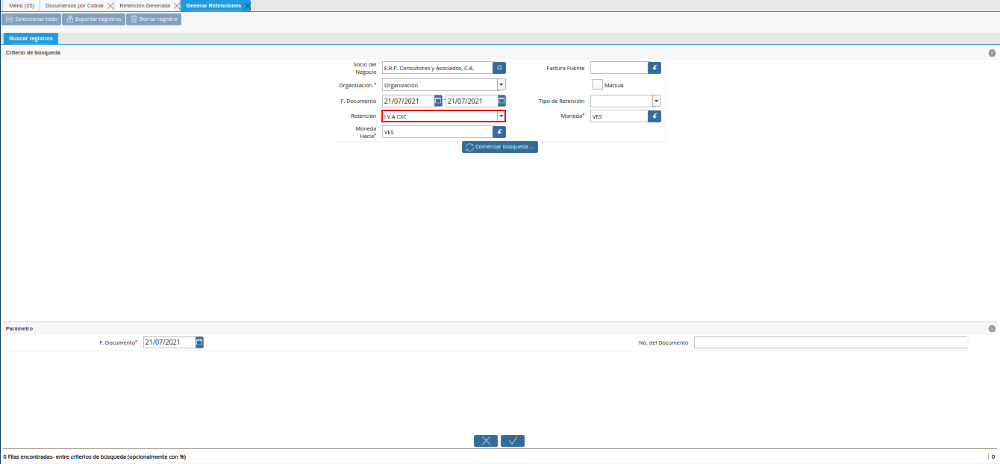
Imagen 14. Campo Retención
Seleccione en el campo “Moneda Hacia”, la moneda a la cual requiere convertir el monto de la retención. Para este ejemplo a moneda a seleccionar en este campo es “VES”
Imagen 15. Campo Moneda Hacia
Seleccione en el campo “Factura Fuente”, la factura por la cual requiere filtrar la información para generar la retención.
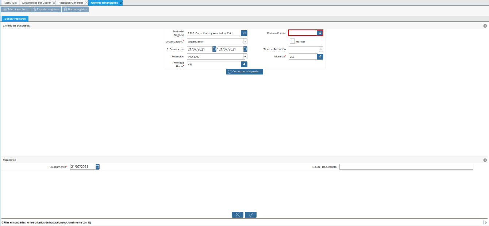
Imagen 16. Campo Factura Fuente
Seleccione el check “Manual”, para filtrar la búsqueda por documentos por cobrar.
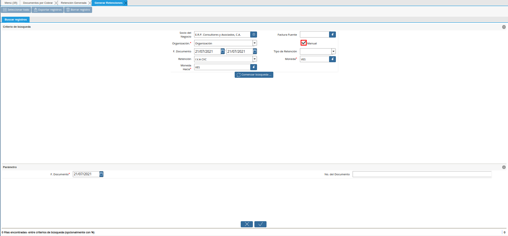
Imagen 17. Check Manual
Note
Este paso es obligatorio para poder realizar las retenciones de “Documentos por Cobrar”.
Seleccione en el campo “Tipo de Retención”, el tipo de retención por el cual requiere filtrar la búsqueda.
Imagen 18. Campo Tipo de Retención
Note
El campo cuenta con tres opciones que son “IM_Retencion de Impuesto Municipal, “ISLR_Retención de I.S.L.R.” y “I.V.A_Retención de I.V.A.”. Recuerde que la selección de este campo va a depender de la retención que se va a aplicar a la factura de cuentas por cobrar.
Seleccione en el campo “Moneda”, la moneda del documento y desde la cual se requiere convertir el monto de la retención. Para este ejemplo a moneda a seleccionar en este campo es “VES”
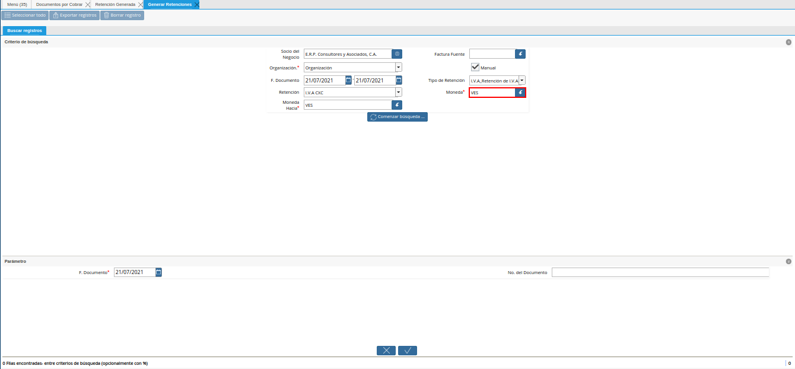
Imagen 19. Campo Moneda
Seleccione la opción “Comenzar Búsqueda”, para filtrar la información en base a lo seleccionado en los campos indicados anteriormente.
Imagen 20. Opción Comenzar Búsqueda

Podrá visualizar los diferentes registros de estimaciones de retenciones generadas en ADempiere.
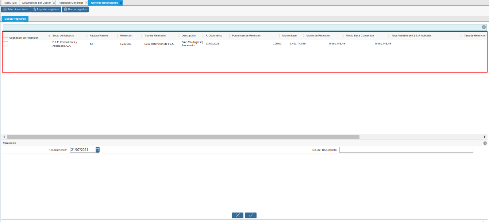
Imagen 21. Estiimaciones de Retenciones
Seleccione los diferentes registros a los cuales requiere generar la retención.
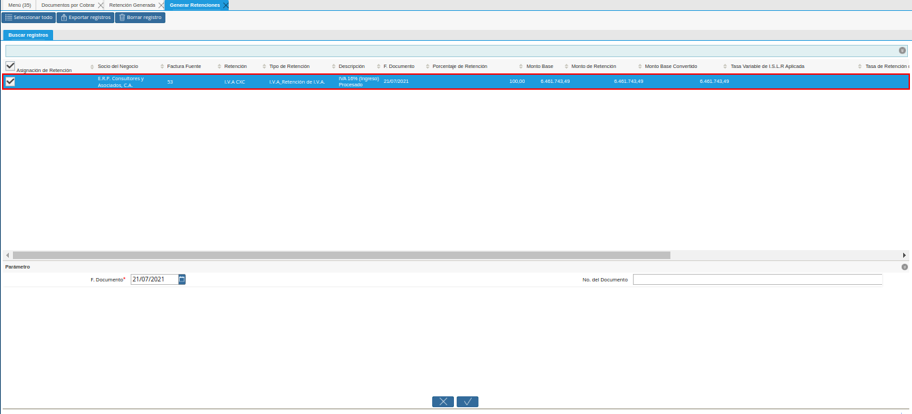
Imagen 22. Selección de Registros para Retención
Note
El proceso permite seleccionar diferentes registros y generar una retención para todos.
Al seleccionar el registro, ADempiere permite modificar el monto de retención, en el campo “Monto de Retención Convertido”. En este ejemplo el precálculo coincidió con el cliente.
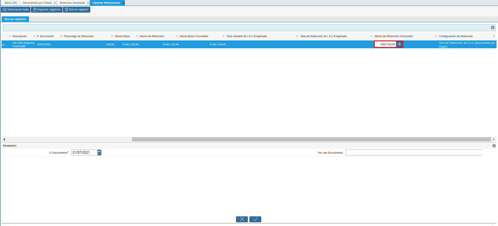
Imagen 23. Campo Monto de Retención Convertido
Warning
El monto estimado de la retención debe ser verificado antes de generar el documento de retención, ya que el este monto puede variar por céntimos o decimales, según el comprobante facilitado por el socio cliente que aplico la retención.
Seleccione en el campo “F. Documento”, la fecha del comprobante de retención facilitado por el socio del negocio cliente que aplico la retención.
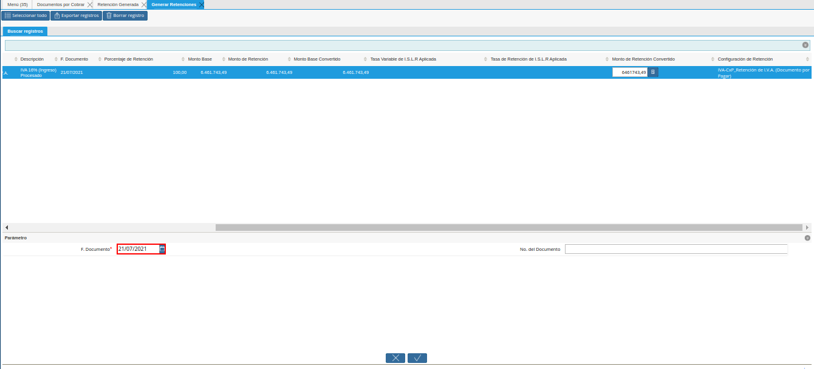
Imagen 24. Campo Fecha de Documento a Generar
Introduzca en el campo “No. del Documento”, el número del documento del comprobante de retención facilitado por el socio del negocio cliente que aplico la retención.
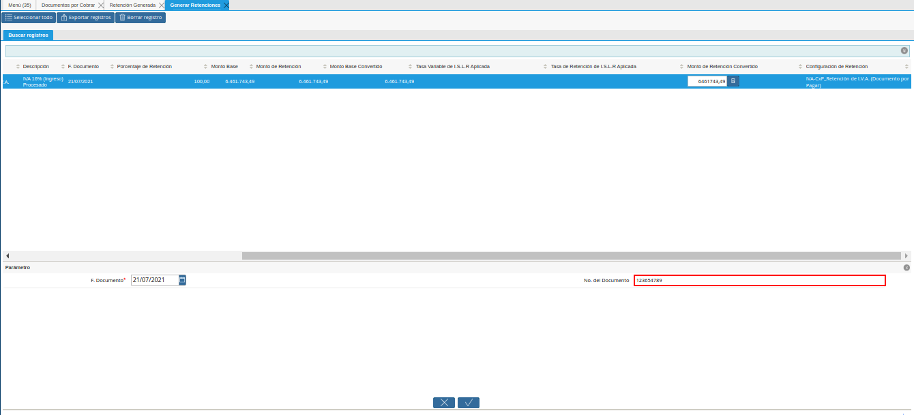
Imagen 25. Campo Número del Documento
Seleccione la opción “OK”, para procesar la retención y generar en la ventana “Documento por Cobrar”, el documento de retención con las indicaciones ingresadas en la ventana del proceso “Generar Retenciones”, con el número de documento ingresado en el campo “No. del Documento”.
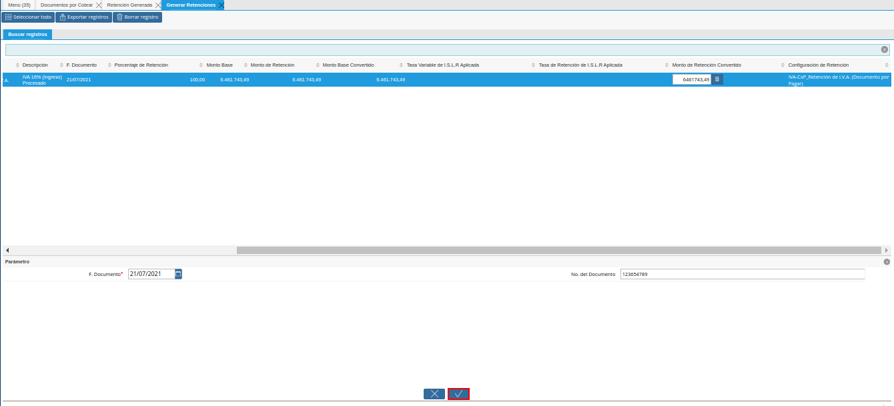
Imagen 26. Opción OK de la Ventana Generar Retenciones
En este punto, fueron generadas las retenciones que rebajan parte de las cuentas por cobrar. Para mayor información puede consultar el reporte Saldos Abiertos.
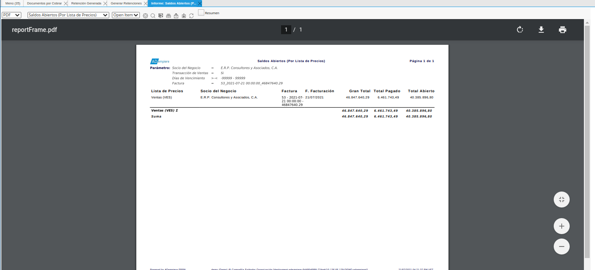
Imagen 27. Reporte de Saldos Abiertos
3.4.2.1.3. Consultar el Documento por Cobrar Generado¶
El documento generado desde la ventana del proceso “Generar Retenciones”, se puede visualizar de la siguiente manera al buscarlo en la ventana “Documento por Cobrar”, con el número de documento ingresado en el campo “No. del Documento” del proceso. Para ejemplificar el registro es utilizado el número de documento “123654789”.
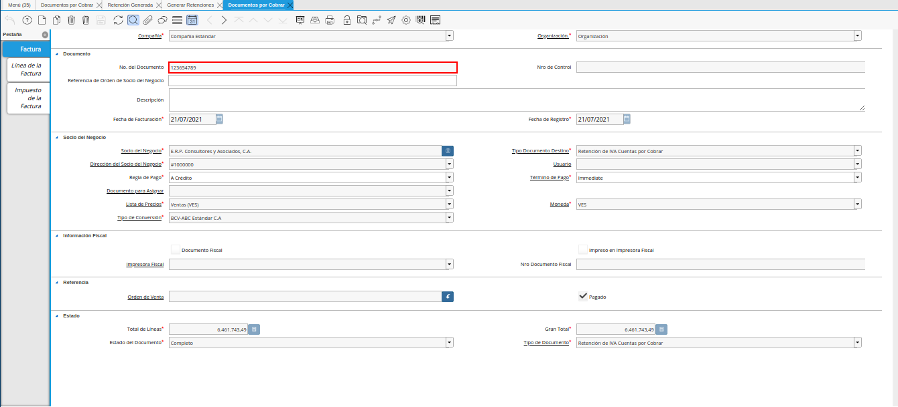
Imagen 27. Documento de Retención de IVA Cuentas por Cobrar Generado.
Note
El documento es generado en estado “Completo” y con las especificaciones ingresadas en la ventana del proceso “Generar Retenciones”. Adicional a ello, toma el socio del negocio que se encuentra en la factura por cobrar desde donde se realizó el proceso.
En la pestaña “Línea de la Factura”, podrá visualizar un registro por cada estimación de retención seleccionada en el proceso “Generar Retenciones”.
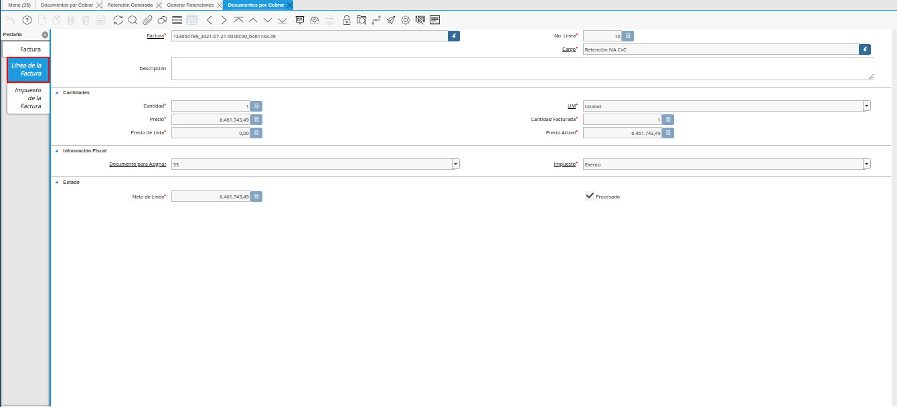
Imagen 28. Líneas de la Retención
Regrese a la pestaña principal “Factura” y seleccione en el icono “Imprimir” ubicado en la barra de herramientas de ADempiere, para visualizar el documento en PDF y poder imprimir el mismo.
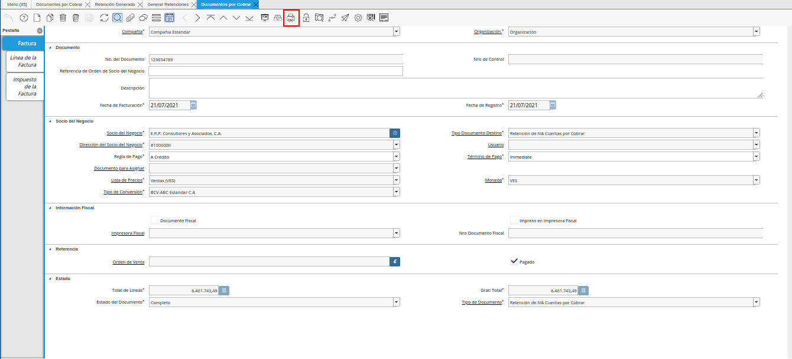
Imagen 29. Icono Imprimir
El PDF del documento “Retención de IVA CxC” quedaría de la siguiente manera.
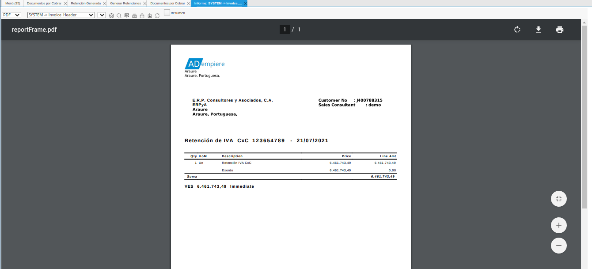
Imagen 30. PDF del Documento Retención de IVA CxC
Note
El procedimiento para generar en ADempiere las retenciones de ISLR y municipales de cuentas por cobrar es el mismo explicado en el presente documento, tomando en cuenta las notas con relación a ellas en la descripción de los campos “Tipo de Retención” y “Retención”.